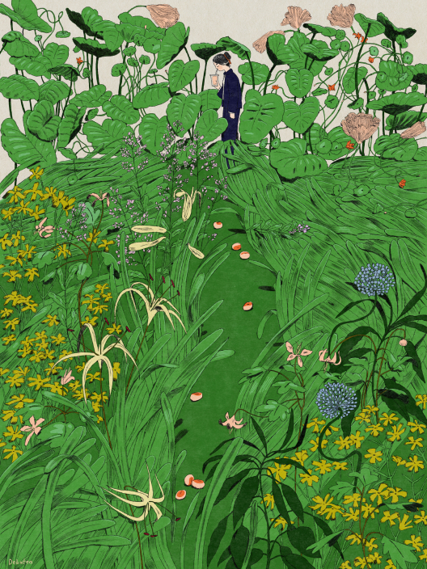
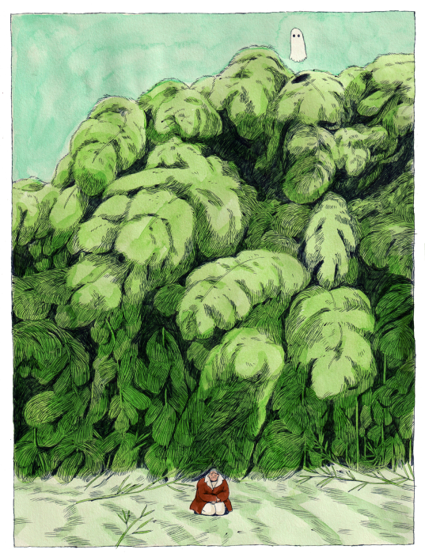
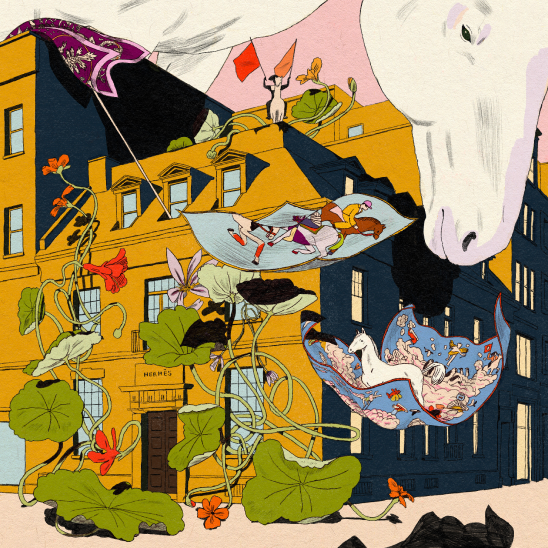

Karlotta Freier

Karlotta Freier is an accomplished Brooklyn-based artist with a background in illustration.

In 2021, she graduated from the MFA Illustration as Visual Essay program at the School of Visual Arts.

She has illustration at the China Academy of Art and spoken as a guest speaker at universities across USA.
Freier's work has also been exhibited in a variety of solo and group exhibitions, as well as festivals.